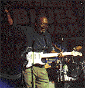
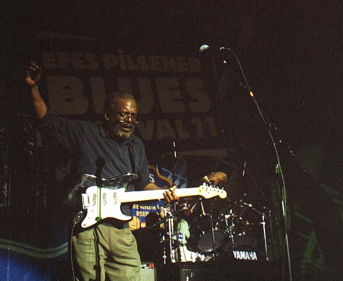

|
Чем бесспорно и традиционно хорош Efes Pilsner Blues Festival - пусть всего три участника, зато они представляют блюз в показательно-контрастных оттенках.  Трио "Братья Холмс" вообще не заявляют себя именно блюзовым коллективом. Они играют roots music - "корневую музыку". В их понимании это смесь причудливая по составляющим, но совершенно естественная в их приготовлении: госпел, соул, кантри, рок-н-ролл и блюз (и помянутые "Битлз" вместе с Томом Уэйтсом) - все в одном котелке. За очевидными исключениями, это примерно те же песни, которые они в детстве пели у себя дома. И в этом отношении мало что изменилось… Вот только голоса огрубели за 33 года гастролей - но блюзу это только на пользу. Все участники трио начали профессиональную карьеру гораздо раньше, но именно в 1967м Вендел и Шерман Холмсы, гитарист и басист, познакомились в Бруклинском клубе с певцом и барабанщиком Попси Диксоном; с тех пор The Holmes Brothers - это название музыкального ансамбля. Они не всегда играли традицию; в начале пути, "обслуживая" публику ночных клубов, исполняли модную танцевальную музыку тех лет. Так называемое "открыли" их только через 20 лет - на заре последнего блюзового бума. До 90-х годов их знали только в пределах club circuit - "клубного круга". В 1989г. они подписали контракт с фирмой "Raunder". Дебютный альбом "In the Spirit" собрал полную коллекцию восторженных рецензий в самых престижных музыкальных изданиях - и вполне справедливо: это было подлинно народная безыскусная, зато очень теплая и душевная музыка, сыграно неотразимо обаятельно. К ним пришла пусть негромкая, но известность общенационального уровня. Играть на фестивалях и гастролировать по свету стало для братьев привычным делом.В Москве "Братья…", ставшие уже дедами, сыграли очень небрежно (мягко говоря): совсем "по-домашнему", но "драйв" был отличный, а голоса - бесспорно блюзовыми. Все трое поют, то перекидываясь куплетами, то сливаясь голосами в госпелл-трио. Венделл Холмс чередует игру на клавишных с соло на гитаре. Явная неотрепетированность вкупе с природной блюзовой музыкальностью создала именно то ощущение подлинности, за которым на фестиваль пришли почитатели традиции. У Холмсов все наполнено теплотой интонации и особой внутренней ритмической пульсацией, что вместе с неподдельной искренностью и составляет их особый неповторимый стиль - над границами привычных стелевых градаций. И все-таки похоже, что для альбомов и для большой сцены у Братьев Холмс есть специальная обще-удобоваримая музыкальная политика. А вот настоящий блюз в их исполнении можно было услышать на неформальном джем-сейшине в "Ле Клубе": здесь Венделл играл жестко, грубо, энергично и очень экспрессивно. В тот момент он и сам горел блюзом, и словно заворожил всех, кто его слушал. Между прочим, это молодые музыканты вытащили его с братом на сцену; и заметно, с каким вниманием они его слушали. Послушать это еще раз нельзя, но фотографии скажут многое. На концерте ничего подобного не было. Почему? У Холмсов могут быть на этот счет свои причины. Не выкладываться на публике - раскрываться полностью только среди своих - когда-то это было вполне по-блюзовому.  |